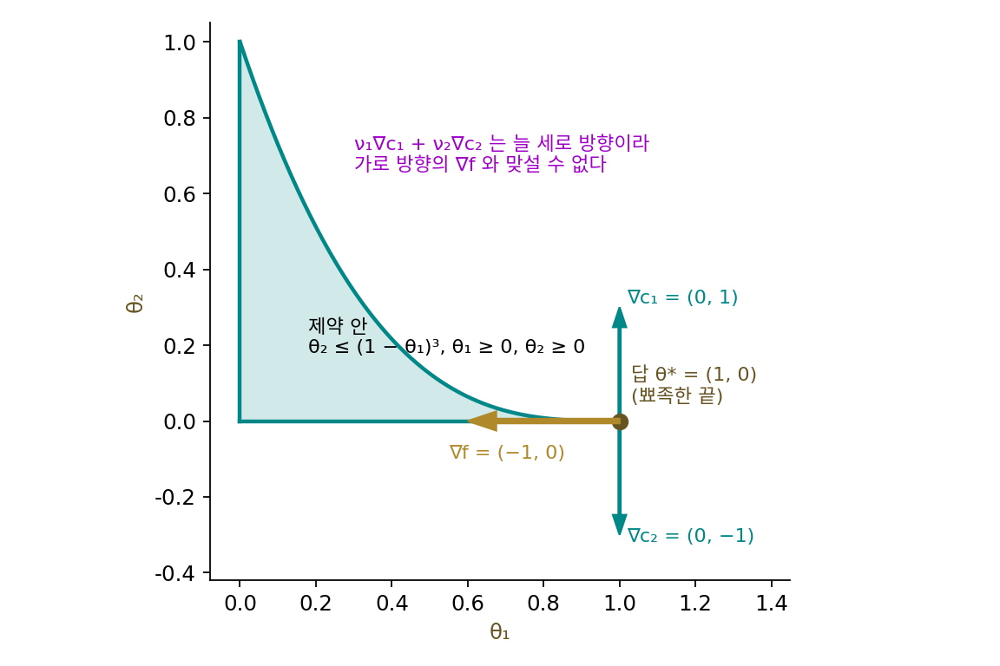
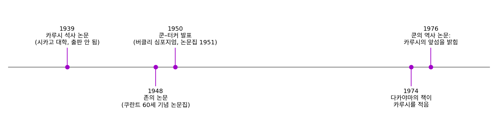
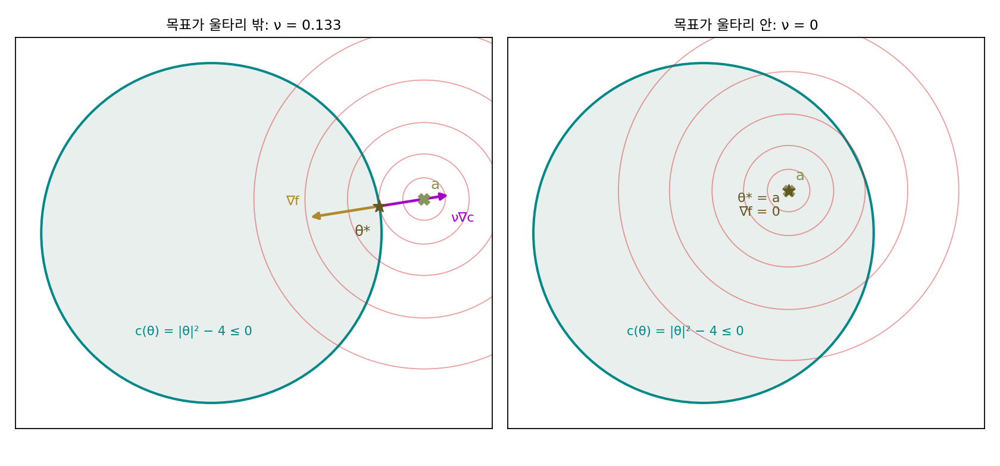
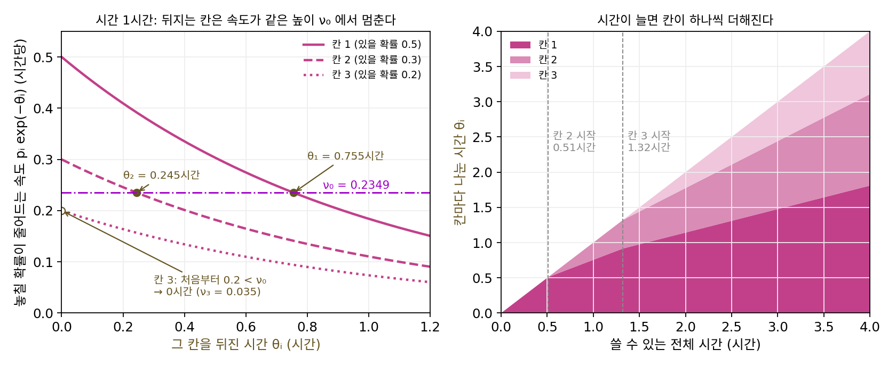
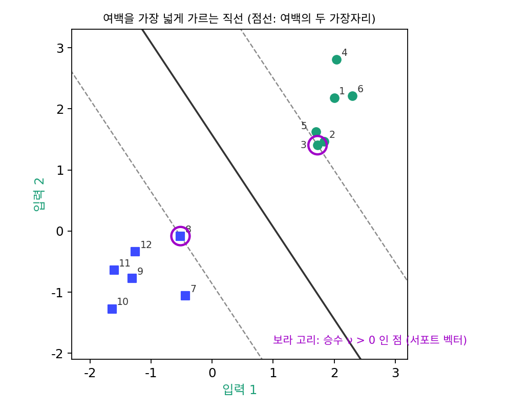
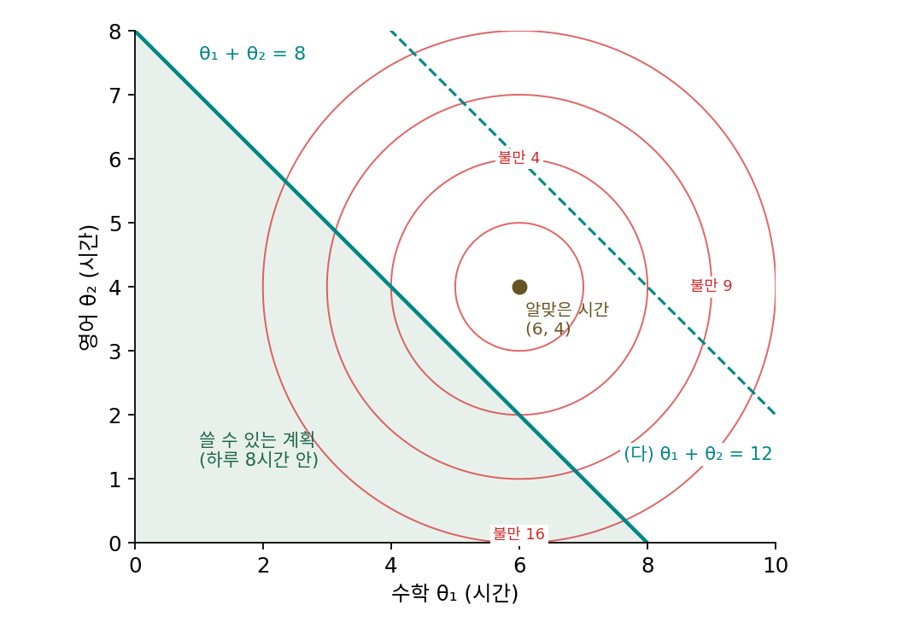
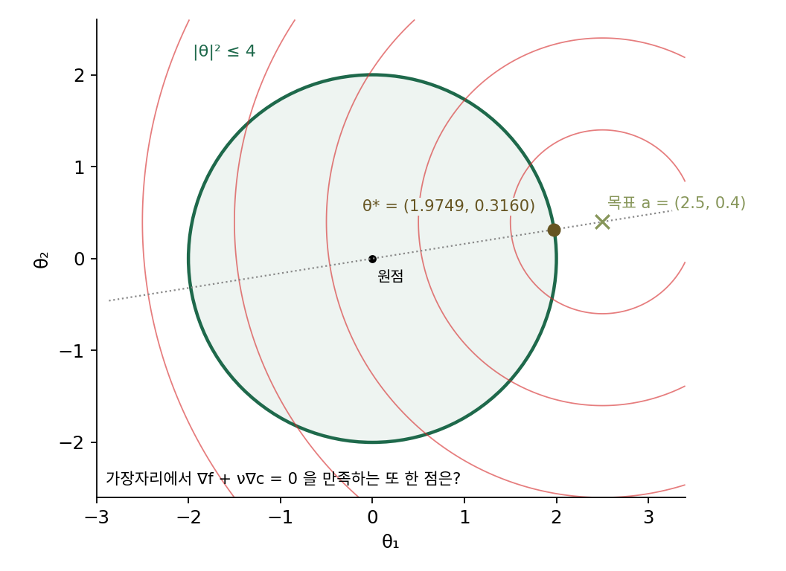
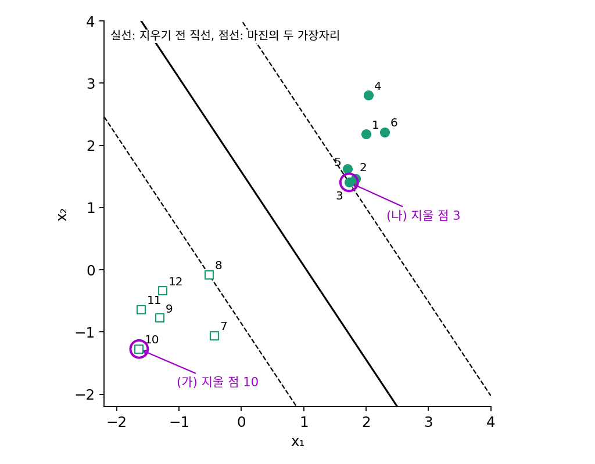

KKT 조건: 제약에 닿은 최소점을 알아보는 법
원판 제약 안에서 목표 (2.5, 0.4)에 가장 가까운 점을 찾을 때, 사영 경사하강은 어디서 출발하든 원판 가장자리의 점 (1.9749, 0.3160)에 닿았다. 그런데 그 점에서 함수 ½|θ − a|²의 그래디언트는 (−0.5251, −0.0840)이라 0이 아니다. 제약이 없을 때는 「그래디언트가 0인가」 하나로 최소점을 알아볼 수 있었지만, 제약에 기대 멈춘 최소점에서는 그 시험이 통하지 않는다. 경사하강을 몇천 스텝 돌려 얻은 답이 정말 최소점인지 확인하고 싶을 때, 또는 스텝을 돌리지 않고 답을 식으로 풀고 싶을 때, 제약에 닿은 최소점이 만족해야 할 조건은 무엇일까?
역사: 세 번 발견된 조건
1950년 여름, 캘리포니아 버클리에서 열린 제2회 버클리 수리통계·확률 심포지엄에서 위상수학자로 알려진 프린스턴의 앨버트 터커(Albert W. Tucker)가 「비선형 계획(Nonlinear Programming)」이라는 제목으로 발표를 했다. 프린스턴에서 막 박사 학위를 마친 해럴드 쿤(Harold W. Kuhn)과 함께 한 일이었다. 두 사람은 원래 선형 계획에서 막 밝혀진 쌍대성(최소화 문제에서 만든 최대화 문제의 답이 원래 답과 같다는 성질)을 2차식 목적함수로 넓히려 했고, 그러다 부등식 제약이 있는 최소화 문제에서 최적점이 만족해야 할 조건을 얻었다. 발표는 1951년 논문집에 실렸고, 「비선형 계획」이라는 이름이 수학 문헌에 처음 등장한 것도 이 논문이었다. 두 사람이 얻은 최적점 조건은 곧바로 「쿤–터커 정리」라 불리며 새 연구 분야를 열었다. 이 논문은 조건이 통하지 않는 경우도 하나 들었는데, 제약 영역의 경계가 바깥으로 뾰족하게 튀어나온 끝에서는 최적점이어도 조건이 맞지 않을 수 있다는 것이다.

그런데 같은 조건은 이미 두 번 나온 적이 있었다. 1939년 12월 시카고 대학의 윌리엄 카루시(William Karush)는 로런스 그레이브스(Lawrence M. Graves)의 지도로 쓴 석사 논문 「부등식을 곁조건으로 한 여러 변수 함수의 최솟값」에서 거의 같은 조건을 증명했다. 당시 시카고 수학과의 관심은 무한 차원의 변분법이었고, 유한 차원의 이 최적점 조건은 작은 정리 작업쯤으로 여겨져 출판되지 않았다. 1948년에는 뉴욕 대학의 프리츠 존(Fritz John)이 리하르트 쿠란트의 60세 기념 논문집에 비슷한 결과를 실었는데, 그 전에 『듀크 수학 저널』에 냈다가 거절당한 논문이었다. 두 번 다 아무도 주목하지 않았다.
카루시의 논문이 다시 빛을 본 것은 한참 뒤였다. 쿤은 미국 수학회 심포지엄에서 비선형 계획의 역사를 발표해 달라는 요청을 받았고, 그 무렵 다카야마 아키라(Takayama Akira)가 1974년에 낸 『수리경제학』을 읽다가 카루시의 석사 논문을 알게 되었다. 쿤은 1975년 2월 카루시에게 「쿤–터커 조건이라 불리는 결과에 대해 당신이 분명히 앞섰다」는 편지를 보냈고, 1976년의 역사 논문에서 카루시의 석사 논문을 출판되지 않은 고전으로 소개했다. 그래서 지금은 이 최적점 조건을 세 사람의 머리글자를 따서 KKT(카루시–쿤–터커) 조건이라 부른다.


같은 조건을 세 번이나 찾았는데 두 번은 아무도 몰랐다는 게 이상해요. 지금이면 석사 논문도 검색하면 나오잖아요.

찾기 어려웠던 것도 있지만, 1939년 시카고에서 카루시의 조건이 왜 작은 일로 보였을지부터 생각해 볼까요? 그때 그 수학과가 붙들고 있던 문제는 무엇이었죠?

무한 차원의 변분법이요. 곡선 하나 전체를 고르는 문제니까… 변수가 유한 개인 문제는 그에 비하면 쉬운 특별한 경우로 보였겠네요.

게다가 부등식 제약이 붙은 최소화 문제를 붙든 사람들이 아직 모여 있지 않았어요. 쿤과 터커도 선형 계획에서 막 밝혀진 쌍대성을 넓히다가 같은 최적점 조건에 닿았고, 「비선형 계획」이라는 이름도 그 1950년 발표에서 처음 나왔어요.

그러면 카루시의 증명은 1939년에 이미 맞았는데, 그 증명을 찾아 쓸 사람들이 1950년에야 생긴 거네요.

제약에 닿은 최소점에서는 그래디언트가 0이 아니잖아요. 그래디언트가 0이 아닌데도 더 내려갈 수 없다면, 그 그래디언트와 무엇이 맞서고 있다고 적어야 할까요?
원판 위의 두 화살표
조건을 찾으려면 제약에 닿은 답 하나를 놓고 무슨 일이 벌어지는지 보면 된다. 제약 「반지름 2인 원판」을 함수 하나로 적자. c(θ) = |θ|² − 4라 두면 원판 안은 c(θ) ≤ 0, 가장자리는 c(θ) = 0이다. 이 제약 함수의 그래디언트 ∇c(θ) = 2θ는 원판 바깥쪽을 가리킨다.
목표 a = (2.5, 0.4)일 때 답 θ* = (1.9749, 0.3160)에서 두 그래디언트를 재 보면 이렇다.
| 목표 a | 답 θ* | 손실의 그래디언트 ∇f(θ*) | 제약의 그래디언트 ∇c(θ*) | c(θ*) |
|---|---|---|---|---|
| (2.5, 0.4) | (1.9749, 0.3160) | (−0.5251, −0.0840) | (3.9498, 0.6320) | 0 |
| (1.0, 0.5) | (1.0, 0.5) | (0, 0) | (2.0, 1.0) | −2.75 |
첫째 줄의 두 그래디언트는 ∇f = −0.1329 × ∇c로 정확히 반대 방향이다. 두 그래디언트가 반대 방향이라면, 손실을 줄이는 방향은 −∇f, 곧 ∇c와 같은 방향인 원판 바깥쪽뿐이다. 바깥으로는 제약 때문에 갈 수 없고, 가장자리를 따라 옆으로 움직이면 −∇f와 직각이라 1차 근사로는 손실이 줄지 않는다. 그러니 손실을 줄일 수 있는 허용된 방향이 하나도 없다. 둘째 줄처럼 목표가 원판 안에 있으면 답은 목표 자체이고, 제약에 닿지 않으며(c = −2.75 < 0), 손실의 그래디언트가 그냥 0이다.
두 경우를 한 꼴로 적으면 다음과 같다. 이 네 줄을 KKT 조건 (제약 안 최소점의 네 조건 / Karush–Kuhn–Tucker conditions)이라 하고, 곱하는 수 ν(뉴)를 라그랑주 승수라 부른다.
첫 줄은 두 그래디언트가 반대 방향으로 맞선다는 것, 둘째는 제약 안에 있다는 것이다. 셋째 ν ≥ 0은 손실이 줄어드는 방향이 바깥쪽이어야 한다는 것이다. 넷째 νc(θ*) = 0은 제약에 닿지 않았으면(c < 0) ν = 0이어야 한다는 것으로, 그때 첫 줄은 제약 없는 시험 ∇f = 0으로 돌아간다. 제약이 여럿이면 제약마다 승수를 하나씩 둔다.
승수 ν에는 쓸모 있는 뜻이 있다. 제약을 조금 늦춰 |θ|² ≤ 4를 |θ|² ≤ 4.001로 바꾸면 최솟값은 0.14140에서 0.14127로 준다. 줄어든 양을 늦춘 양 0.001로 나누면 0.1329, 바로 ν다(0.1, 0.01만큼 늦추면 0.1290, 0.1326). 승수는 제약을 한 단위 늦출 때 최솟값이 얼마나 내려가는지를 알려 주므로, 목표가 원판 안에 있어 제약을 늦춰도 답이 바뀌지 않으면 ν = 0이다.
KKT 조건은 일반적으로는 최소점이 만족해야 할 필요조건이다. 그런데 손실이 볼록 함수이고 제약이 볼록 집합이면 KKT 조건을 만족하는 점은 반드시 최소점이다. 볼록 함수를 처음 소개할 때 인용한 록펠러가 볼록이면 「최적점이 되려면 꼭 필요한 1차 조건이 그것만으로 충분해진다」고 한 것은, 볼록 문제에서 KKT 조건이 충분조건이 된다는 말이다. 볼록이 아닌 제약, 예컨대 반지름 1~2의 고리에서 목표 쪽을 잘라 낸 말굽 제약에서는 두 끝처럼 조건을 만족하는 점이 여럿 있을 수 있고, 그 가운데 어느 것이 최소인지는 조건만으로 가릴 수 없다.

잠수함 수색: 시간을 칸마다 나누기
잃어버린 지갑을 찾을 때는 가장 있을 법한 가방부터 뒤지지만, 가방만 한 시간 내내 뒤지지는 않는다. 가방을 몇 분 뒤져도 안 나오면 거기 있을 가능성이 낮아진 것 같고, 아직 손대지 않은 외투 주머니나 책상 서랍이 이제는 더 있을 법해 보여서 뒤지는 곳을 옮긴다. 정해진 시간을 여러 곳에 얼마씩 나눌지를 셈으로 정하면 제약이 붙은 최소화 문제가 된다.
이 문제를 학문으로 세운 것은 전쟁이었다. 2차 세계대전 때 미 해군은 대서양의 유보트를 찾으려고 물리학자 필립 모스(Philip M. Morse)를 중심으로 대잠전 작전연구반을 꾸렸고, 컬럼비아 대학의 수학자 버나드 쿠프먼(Bernard O. Koopman)이 여기서 일했다. 쿠프먼은 비행기와 함정의 탐색 시간을 해역에 어떻게 나눌지를 다루었고, 그 연구는 1946년 해군 작전평가단 보고서 56호 『탐색과 차단(Search and Screening)』에 정리되었다. 이 보고서는 기밀로 묶여 있다가 1958년에 풀렸다. 쿠프먼은 한 해역에 탐색 노력 z를 쏟았을 때 거기 있는 목표를 찾을 확률을 1 − e⁻ᶻ로 두고, 전체 노력이 정해져 있을 때 찾을 확률이 가장 커지게 노력을 나누는 문제를 풀었다. 1957년 학술지 『오퍼레이션스 리서치』에 「탐색 이론 III: 탐색 노력의 최적 분배」로 실린 내용이다.
숫자로 따라가 보자. 해역을 세 칸으로 나누고, 잠수함이 각 칸에 있을 확률을 p₁ = 0.5, p₂ = 0.3, p₃ = 0.2로 둔다. 한 칸을 θᵢ시간 뒤지면 거기 있는 잠수함을 1 − exp(−θᵢ)의 확률로 찾는다고 하자. 한 시간이면 63%다. 비행기가 쓸 수 있는 시간은 1시간이다. 줄일 손실은 놓칠 확률 f(θ) = 0.5 exp(−θ₁) + 0.3 exp(−θ₂) + 0.2 exp(−θ₃)이고, 제약은 θ₁ + θ₂ + θ₃ ≤ 1과 θᵢ ≥ 0 세 개다. exp(−θ)는 볼록 함수이니 그 합도 볼록이고 제약은 모두 일차식이라, KKT 조건을 만족하는 점이 곧 답이다. 1시간을 다 칸 1에 쓰면 찾을 확률이 0.316, 세 칸에 20분씩 고르게 나누면 0.283이다. KKT 조건을 풀어 나온 답은 칸 1에 0.755시간, 칸 2에 0.245시간, 칸 3에 0시간이고, 찾을 확률은 0.330이다. 가장 있을 법한 칸에 다 거는 것보다도, 고르게 나누는 것보다도 낫다.
조건을 하나씩 읽어 보자. 시간 제약의 승수를 ν₀, 「θᵢ ≥ 0」을 −θᵢ ≤ 0으로 적은 제약의 승수를 νᵢ라 하면, KKT 첫 줄은 칸마다 −pᵢ exp(−θᵢ) + ν₀ − νᵢ = 0이다. pᵢ exp(−θᵢ)는 칸 i를 조금 더 뒤질 때 놓칠 확률이 시간당 줄어드는 속도다. 칸 1과 칸 2는 뒤지는 칸이라 −θᵢ ≤ 0에 닿지 않았으므로 넷째 조건에서 νᵢ = 0이고, 두 칸의 속도가 0.5 exp(−0.755) = 0.3 exp(−0.245) = 0.2349로 같아야 한다. 한 칸의 속도가 더 빠르면 시간을 그 칸으로 옮겨 놓칠 확률을 더 줄일 수 있기 때문이다. 칸 3은 한 번도 뒤지지 않았을 때의 속도가 0.2라서 0.2349보다 느리다. 칸 3은 제약 −θ₃ ≤ 0에 닿아 있고, 승수가 ν₃ = 0.2349 − 0.2 = 0.035 > 0이다. 셋째 조건 ν ≥ 0이 「처음 뒤지는 순간부터 다른 칸보다 느린 칸은 아예 뒤지지 않는다」는 판단을 맡는다.
승수 ν₀ = 0.2349에는 원판 예에서 본 뜻이 그대로 있다. 쓸 수 있는 시간을 조금 늘리면 놓칠 확률이 시간당 0.2349의 비율로 준다. 시간이 늘면 칸 1·2의 속도가 함께 내려오다가 0.2에 닿는 순간(1.32시간)부터 칸 3도 뒤지기 시작한다. 3시간이면 1.476, 0.965, 0.559시간으로 세 칸을 모두 뒤지고, 세 칸의 속도는 0.1143으로 같아진다. 찾을 확률은 0.657이다.

ML에서: 서포트 벡터는 승수가 0이 아닌 점
KKT 조건이 이름을 남긴 대표적인 곳이 서포트 벡터 머신이다. 베른하르트 보저(Bernhard Boser), 이자벨 기용(Isabelle Guyon), 블라디미르 바프니크(Vladimir Vapnik)는 1992년 「마진이 가장 넓은 분류기를 학습시키는 알고리즘」에서 이 방법을 정리했다. 1995년에는 코리나 코르테스(Corinna Cortes)와 바프니크가 「서포트 벡터 네트워크」에서 이 방법을 정리했다. 두 덩어리의 점을 직선 w·x + b = 0으로 가르되, 직선에서 가장 가까운 점까지의 마진을 가장 넓게 하는 직선을 고른다. 식으로는 샘플마다 제약 yᵢ(w·xᵢ + b) ≥ 1(yᵢ는 정답 +1 또는 −1)을 두고 ½|w|²를 줄이는 문제이고, 목적함수는 볼록이며 제약은 모두 일차식이라 볼록 집합이다. 그래서 KKT 조건을 만족하는 해가 곧 답이다.
넷째 조건이 여기서 하는 일이 크다. 샘플마다 승수 νᵢ가 있는데, 제약에 닿지 않은 샘플, 곧 마진의 가장자리보다 멀리 있는 샘플은 νᵢ = 0이다. 첫 줄의 조건을 풀면 w는 승수가 0이 아닌 샘플들의 합 Σνᵢyᵢxᵢ로 적히므로, 직선은 마진의 가장자리에 걸친 몇 개의 점만으로 정해진다. 이 점들이 직선을 받치고(support) 있다고 해서 서포트 벡터라는 이름이 붙었다. 씨앗 7로 뽑은 점 12개로 풀어 보면, 마진의 폭은 2.6931이고 승수가 0이 아닌 점은 3번과 8번 둘뿐이다(ν = 0.2758). 나머지 열 점은 마진 가장자리에서 떨어져 있어 승수가 0이다.

문제 9. 하루 여덟 시간의 공부 계획
시험 전날 수학과 영어를 공부한다. 수학은 6시간, 영어는 4시간이 적당하고, 그보다 적거나 많으면 불만이 시간 차이의 제곱만큼 쌓인다: 수학 θ₁시간, 영어 θ₂시간의 불만 f(θ₁, θ₂) = (θ₁ − 6)² + (θ₂ − 4)². 그런데 쓸 수 있는 시간은 하루 8시간이다(θ₁ + θ₂ ≤ 8). (가) 불만이 가장 작은 계획은? (나) 그때 라그랑주 승수 ν는 얼마이고 무엇을 뜻하는가? (다) 쓸 수 있는 시간이 12시간이면?

수학이 더 중요하니까 수학은 6시간 다 채우고 영어를 2시간 하는 게 좋겠어요. 불만은 0 + 4 = 4요.
반반 4시간씩이어도 4 + 0 = 4야. 둘 다 4라면 그 사이에 더 나은 게 있지 않을까? 수학 5, 영어 3이면 1 + 1 = 2야.
서연 학생 계획에서 KKT 첫 줄을 확인해 볼까요? 제약 함수를 c = θ₁ + θ₂ − 8로 두면 두 그래디언트는요?
불만의 그래디언트는 (2(5 − 6), 2(3 − 4)) = (−2, −2)이고 제약의 그래디언트는 (1, 1)이에요.
그럼 첫 줄을 맞추는 ν는요?
(−2, −2) + 2 × (1, 1) = 0이니까 ν = 2예요. 0 이상이고, 제약에도 딱 닿아 있어요.
그래도 후보 하나일 뿐일 수도 있잖아. 이게 진짜 답이야?

불만이 볼록이고 제약이 일차식이면 네 줄을 다 만족하는 점이 답이었어. 두 과목에서 한 시간을 옮길 때 줄어드는 불만이 같아지는 자리이기도 하고.
잠수함 수색에서 칸 1과 칸 2의 속도가 0.2349로 같아진 거랑 같은 모양이네. 그때 칸 3은 처음부터 0.2로 느려서 아예 빠졌잖아. 여기서 영어는 0시간일 때 불만이 줄어드는 속도가 시간당 2 × 4 = 8이니까 ν = 2보다 훨씬 빨라. 영어가 빠질 일은 없겠어.

ν = 2라는 숫자는 하루가 한 시간 길어지면 무엇을 알려 줄까요?
제약을 한 단위 늦출 때 최솟값이 내려가는 양이니까, 한 시간 늘면 불만이 2쯤 준다는 거죠? 9시간이면 수학 5.5, 영어 3.5로 불만 0.5예요. 실제로는 1.5가 줄었네요. 2가 아니에요.

ν는 쓸 수 있는 시간이 딱 8시간일 때 잰 변화율이라서 그래. 8.1시간으로 늘리면 줄어든 양 ÷ 0.1이 1.95로 거의 2야. 시간을 늘릴수록 남은 불만이 작아지니까 한 시간의 값어치도 떨어지고, 9시간에서 다시 재면 ν = 1이야.

(다)는 12시간이면 수학 6, 영어 4를 다 하고도 2시간이 남아요. 제약에 안 닿으니까 ν = 0이고요. 시간이 남는 날에는 한 시간을 더 줘도 불만이 안 주는 거죠. 시험 기간에 「한 시간만 더 있었으면」 하는 그 한 시간의 값이 승수였네요.
문제 10. 승수가 음수로 나오면
원판 |θ|² ≤ 4 안에서 ½|θ − a|²(a = (2.5, 0.4))를 줄인다. 원판의 가장자리에서 KKT 첫 줄 ∇f + ν∇c = 0을 만족하는 점은 답 θ* = (1.9749, 0.3160) 말고도 하나 더 있다. (가) 그 점은 어디이고 ν는 얼마인가? (나) 그 점은 최소점인가? (다) 「ν ≥ 0」이라는 조건은 무엇을 걸러 내는가?

두 그래디언트가 한 직선 위에 있으려면 θ가 원점과 a를 잇는 직선 위에 있어야 해요. 가장자리에서는 θ*와 그 반대쪽 (−1.9749, −0.3160) 둘이에요. 반대쪽에서 풀면 ν = −1.1329예요. 첫 줄은 만족하니까 이것도 후보죠.
그 점에서 목표까지 거리는 얼마죠?

4.5318이요. 답의 0.5318보다 4나 멀어요. 원판에서 목표에서 가장 먼 점이네요.
거기서 원점 쪽으로 5%만 들어가도 손실이 10.2686에서 9.8204로 줄어. 제약 안쪽으로 내려갈 길이 열려 있는데 멈춘 거니까 최소점일 수가 없어.
ν가 음수라는 것은 두 그래디언트가 어떻게 놓였다는 뜻이죠?
∇f = −ν∇c = 1.1329 × ∇c니까… ∇f가 바깥쪽을 가리켜요.
그럼 손실이 줄어드는 방향은 어느 쪽이죠?
−∇f니까 원판 안쪽이에요. 제약이 막고 있는 게 아니라 손실 스스로 안쪽으로 내려가라고 말하는 자리네요.
그럼 (다)의 「ν ≥ 0」은 제약이 실제로 길을 막고 있는 점만 남기는 조건이구나.

라그랑주 승수만 쓰는 등식 제약 문제에서는 승수의 부호를 따지지 않는데, 부등식 제약에서는 부호가 극소와 극대를 가르네요. 미적분에서 극값 후보를 찾은 뒤 2차 미분의 부호로 가르던 것처럼요.
첫 줄만 풀어서 나온 후보를 다 답이라고 냈으면 반은 틀렸겠어요. 조건 네 줄이 다 필요한 거네요.
문제 11. 서포트 벡터를 빼면
위 SVM 예(씨앗 7로 뽑은 점 12개, 마진 폭 2.6931, 서포트 벡터는 3번과 8번)에서 점 하나를 지우고 다시 푼다. 10번 점은 마진 가장자리에서 가장 멀다(y(w·x + b) = 2.1839). (가) 10번 점을 지우면 직선과 마진은 어떻게 되는가? (나) 3번 점을 지우면? (다) 학습 데이터에서 어떤 점이 직선을 정하는가?

10번이 가장 멀리 있으니까 그걸 빼면 아래 덩어리의 모양이 많이 바뀌어서 직선도 크게 움직일 것 같아요.
10번 점의 승수는 얼마였죠? 승수가 0인 점이 w를 적는 합에 들어가나요?
0이에요. w = Σνᵢyᵢxᵢ에서 그 항은 처음부터 0이었어요. 실제로 풀어 보니 w = (0.6190, 0.4103), b = −0.6456, 마진도 처음과 같은 2.6931이에요.
3번을 빼면 w = (0.5651, 0.4350), b = −0.6715로 바뀌고 마진이 2.8043으로 넓어져. 3번이 가장자리를 붙잡고 있었는데, 그게 빠지니 그다음으로 가까운 점들까지 마진이 넓어진 거야.
그럼 (다)는요? 멀리 있는 점이 아무리 많아도 직선은 그대로일까요?

음, 넷째 조건이 νc = 0이었죠. 제약에 닿지 않은 점은 승수가 0이에요.
승수가 0인 점은 직선에 어떻게 들어가죠?
w = Σνᵢyᵢxᵢ에서 빠지니까 아무 역할도 안 해.
그럼 마진 가장자리 밖에 있는 한 직선은 바뀌지 않고, 직선은 가장자리에 걸친 점, 서포트 벡터만으로 정해지네요. 학습이 끝난 뒤 나머지 점을 다 버려도 같은 분류기를 쓸 수 있고요.
반 평균이 아니라 커트라인 근처 학생 몇 명이 합격선을 정하는 것과 같네요. 전교 1등이 전학을 가도 커트라인은 안 바뀌는데, 커트라인에 걸린 학생 한 명이 빠지면 바뀌는 거죠.